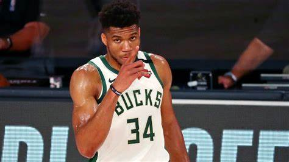

El 25 de junio de 2019, fue nombrado MVP de la temporada 2018-19 de la NBA.2 Premio que repitió la temporada siguiente.3
Sus hermanos Thanasis (n. 1992), Kostas (n. 1997) y Alex (n. 2001) también son jugadores profesionales de baloncesto.
El 20 de julio de 2021, se proclamó campeón de la NBA, y fue nombrado MVP de las Finales.4

Carrera deportiva
Europa
Comenzó su carrera profesional con solo 17 años, en el Filathlitikos B.C. de la segunda división griega, alternando sus apariciones con las que tuvo
en el equipo júnior. Jugó una temporada en la que promedió 9,5 puntos, 5 rebotes y 1,4 asistencias por partido.5
En diciembre de 2012 firmó un acuerdo por cuatro temporadas con el CAI Zaragoza de la liga ACB por el cual el club adquirió los derechos deportivos y
federativos,6 aunque finalmente se decantó por entrar en el Draft de la NBA
"Detesto el racismo, porque lo veo como algo barbárico, ya venga de un hombre negro o un hombre blanco". "Nelson Mandela"